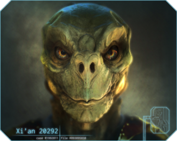

Xi'An
The Xi'An (pronounced : / SHEE-ahn /) Empire is a hereditary absolute monarchy located along the border of the Eastern Systems. It comprises at least fourteen known systems and is governed by Emperor Kray. The emperor has a High Council of Advisers, each representing a facet of the government. The title of Emperor passes down through the family line. A similar government structure is found on each Xi'An controlled planet, with every planetary council member reporting to their respective counterparts on the Emperor's Council.
The Xi'an are the masters of diplomacy in the Star Citizen universe. They are patient and refined, but can and will throw down if the situation calls for it. They live for centuries; for this reason, propagation of the species is carefully monitored and directed by the government to prevent overcrowding. While their placid demeanour can often be interpreted as aloofness or apathy, their long lifespan means that they act with decades in mind, not years.
The Xi'An are the second alien race to be discovered by the UEE, the first being the Banu.
History
Cold War (2530-2789)
The Xi'An Empire became known to humans in 2530 when the Gaia Planet Services attempted to terraform a planet without authorization. Turns out the planet wasn’t uninhabited. A new race, later discovered to be the Xi’An Empire, showed up while the terraformers were building the equipment. This encounter immediately escalated into a 259 year "Cold War" (2530-2789). In the darker era of human history, the Imperator and government often used the Xi’An threat as a means to terrify their own citizens and swell the power of the military. Although neither side declared open war, there were many casualties on both sides from covert operations, sabotage, and espionage. Due to their extended lifespan, there are Xi’An from that era that are still alive, such as Kray, the current Emperor, who negotiated the daring peace accord with Senator Akari in 2789.
The Xi’An and Humanity have had a tumultuous relationship over the years. While the Xi’An have generally regarded Humanity as short-sighted and impetuous, they have acknowledged our capacity to destroy and treated us accordingly. While their technology might seem superior to ours (it certainly looks nicer), most of that is simply due to its alien origin. Our two civilizations are on relatively equal technological footing. This ability for mutual annihilation is probably what kept either side from attempting an all-out attack.
The Perry Line (2789)
A line of systems that acted as a no-man’s-land between the UEE and the Xi’An. These systems (Tohil, Oya, Gurzil, Horus, Pallas, Hadur, Indra and Virtus) became known as the Perry Line. After the Peace Treaty of 2789, the Perry Line was divided between the UEE and the Xi’An with Tohil, Oya, Gurzil and Horus going to the UEE and Pallas, Hadur, Indra and Virtus going to the Xi’An.
Present
Relations with the Xi’An have warmed over the centuries, but it would be difficult to call them friendly without a slight hint of sarcasm. ‘Guarded’ is probably a more accurate term. There are undoubtedly members of the Xi’An government who still regard the UEE with suspicion and distrust. The current Imperator has always been clear that the futures of two nations are intertwined. As more human Corps enter into tech-exchange deals with Xi’An companies, apparently they feel the same.
Personality
To Humans, Xi’An culture can seem rigid and lifeless. A majority of that is artifice. The Xi’An present themselves as polite but neutral, particularly to those they have never met before. This is an age-old social testing mechanism. They approach a person as a blank-slate and let the other person set the tone (or tip his or her hand) as to how the interaction will progress. When a Xi’An feels comfortable with a contact, they will begin to lose the artifice and relate on a more personal level. With Humans, it takes a little longer (as we said before, a lot of them remember the Messer Era).
There is a definite “us versus them” mentality within the Xi’An society. They will not hesitate to take another Xi’An’s side over an outsider unless definitive evidence is presented to support the outsider’s claim or accusation.
It is not unusual to see Xi’An within UEE space, usually falling into three categories: visiting Xi’An businessmen or dignitaries (as described above), younger Xi’An who haven’t quite settled into the Xi’An culture, and expatriates.
There are those within the Xi’An Empire who felt that their way of life was too stifling, welcomed Humanity’s ‘childish’ emotions as a breath of fresh air and expatriated into the UEE. Some went through the arduous process of becoming Citizens while others enjoy the relaxed civic responsibility of Civilian life.
Military Service
Service in the Military is compulsory for every male and female in the Xi'An Empire. After an obligatory term of service (fifteen earth years) in one of the branches of the military all Xi'Ans are considered to be reserve members for the rest of their lives. The standing Xi’An armed forces consist currently of over sixteen million members, not including the civilian populace, all of which effectively have combat training.
While not inherently aggressive or expansionist in their nature, the Xi'An history is rife with civil war and power struggles. However over the last 500 years the Xi'An have adopted alternate methods to warfare preferring subtlety and manipulation to overt conflict. Xi’An influence is suspected in the revolution and subsequent overthrow of Imperator Messer XI in 2792.
Xi'An Ships
All Xi'an ships seem to have a vertical design.
- Qhire Karthu
- Capital Ship
- Cargo Ship
- Transport Ship
- Oracle-Class Carrier
- Link
- Volper
Star Systems
There are currently 12 known star systems in Xi'An Territory.
- Virtus
- Eealus
- El'Sin
- Rihlah
- Khabari
- Kayfa
- Markahil
- Tal
- Pallas
- Ayr'Ka
- Hadur
- Indra
Language
Shē’sueren – literally “Hello and Greetings with Peace.” This is the formal greeting and meant to only be used among close friends or with trusted business partners or in the hope of establishing a bond. Use of this phrase in a casual manner or when approaching a situation with tension or duplicity will immediately marginalize you in the Xi’An’s eyes. One could argue that it’s a pledge of truth and honor as much as a greeting.
Chac – A casual hello. To be used among peers or to subordinates. Use of this phrase from a subordinate to a superior or to a Xi’An of a higher caste than you will cause offense.
Athlē-korr – “Safe Travel” a formal good-bye. Roughly the equivalent of Godspeed in ancient Earthen sea-faring days.
Gath – Casual good-bye.
A majority of the Xi’An can be quite forgiving when it comes to minor social infractions. They understand that, more often than not, it is not intentional and appreciate the effort to learn their customs. But if you find yourself offending a Xi’An, you don’t have to worry. They won’t get angry or try to kill you. The Xi’An find such displays of emotion to be immature. They will simply shut down and become curt, succinct, and intractable
Most of these social rules only apply to the first several meetings. Once a bond of trust or friendship is established, the Xi’An are quite forthcoming and relaxed.
Religion
No official religion. There are scattered belief systems but they tend to offer moral guidelines or promote universal spirituality rather than worshiping specific gods.
Crime
There is less crime per capita in the Xi’An Empire than in the UEE, but it still exists. The Xi’An pride themselves on having ‘dignified’ criminals, since acting from emotion is seen as a sign of weakness and immaturity. So criminals within the Xi’An Empire are similar to the syndicates within the UEE, sprawling disciplined organizations whose business happens to be crime.
There are Xi’An pirates and smugglers but they tend to be younger, still in their rambunctious phase of life. These pirates will usually hunt in UEE territory, but they will rob their own kind if the cargo’s right.